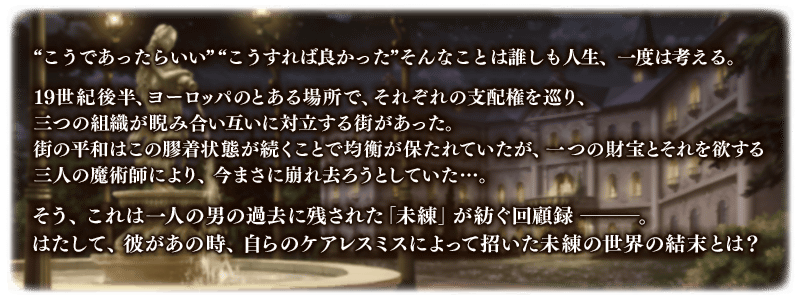
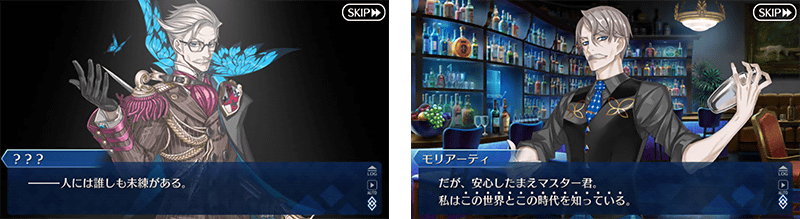
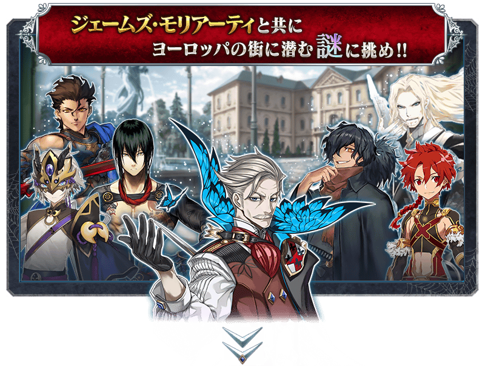
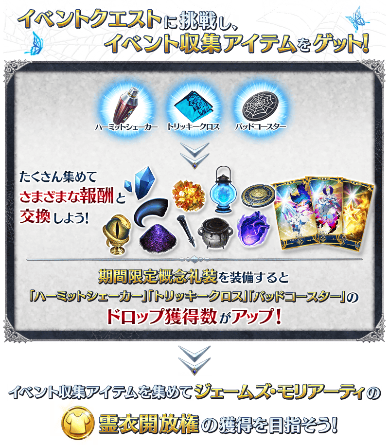
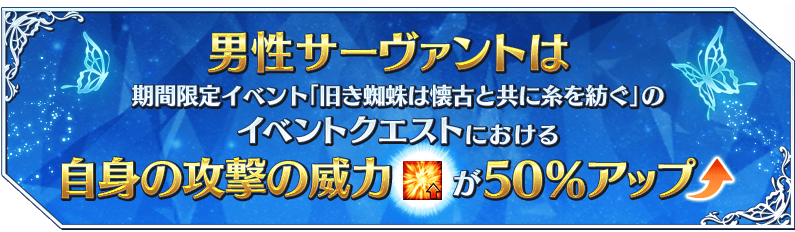
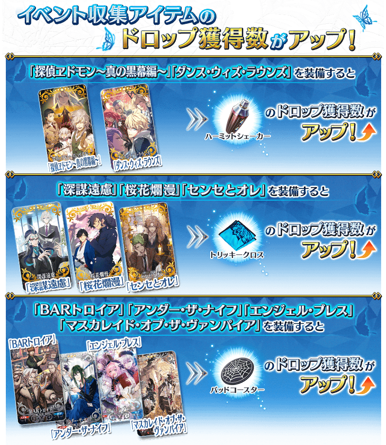
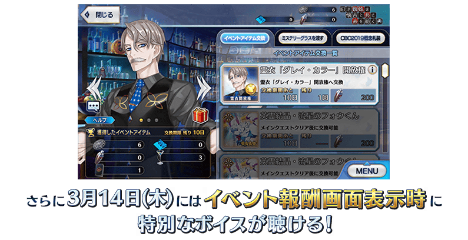
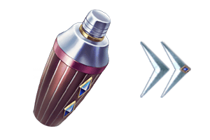
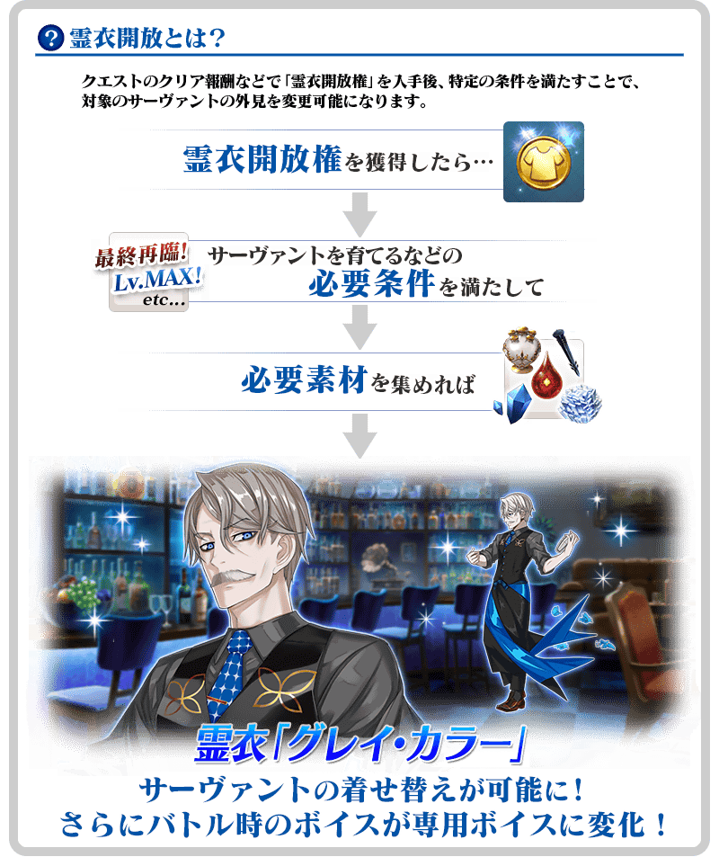
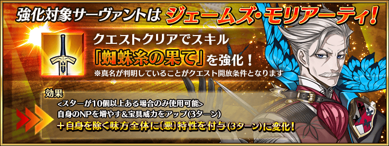

◆活動舉辦期間◆
2019年3月11日(一) 17:00～3月19日(二) 11:59
◆活動概要◆
舉辦期間限定活動「古老蜘蛛與懐舊共同紡絲」！
與“惡之領導力”詹姆斯・莫里亞蒂一同追求在透過強制靈子轉移引導到19世紀後半的歐洲中掀起的「刻上留戀的物語」結尾吧！
本活動中，管理室(ターミナル)會出現活動關卡！
除了享受故事的主線關卡將逐日開放外，在通過第1節後會開放收集活動收集道具的自由關卡。
攻略活動關卡，看清故事的結尾吧！
※本頁面圖片皆為開發中。會有與實際圖片有所差異的情況。 ※本活動中，根據使用裝置的音量設定會有一部份演出以較大音量播放的情況。事前確認利用使用裝置的音量，享受活動。 ※一部份的關卡為日後開放。
◆有關Servant真名的注意◆
在2018年12月31日(二) 23:0023:00以後新配信的主線故事及期間限定活動、一部份關卡中，會顯示隱藏真名的對象Servant真名。
※已經配信的主線故事、復刻活動、一部份關卡中不在此限。
◆活動參加條件◆
滿足以下條件的Master才能參加
・通過「特異點F 炎上汙染都市 冬木」




能享受故事的主線關卡將逐日開放。
通過主線關卡第1節的話，會開放收集活動收集道具的自由關卡。
之後的自由關卡是由通過主線關卡和自由關卡來開放以降的自由關卡。
【關卡舉辦期間】
| 關卡 | 舉辦期間 |
|---|---|
| 主線關卡第1節 自由關卡 |
3月11日(一) 17:00～ 3月19日(二) 11:59 |
| 主線關卡第2節 自由關卡 |
3月12日(二) 17:00～ 3月19日(二) 11:59 |
| 主線關卡第3節 自由關卡 |
3月13日(三) 17:00～ 3月19日(二) 11:59 |
| 主線關卡第4節 自由關卡 |
3月14日(四) 17:00～ 3月19日(二) 11:59 |
| 主線關卡第5節 自由關卡 |
3月15日(五) 17:00～ 3月19日(二) 11:59 |
超值攻略方法・其1
本活動的期間中，所有男性Servant在活動關卡中，會得到自身攻擊威力提升50%的加成！

※俄里翁、恩奇杜、始皇帝、夏爾・德翁、阿斯托爾福也是活動加成對象。 ※自3月8日(五) 17:00，在Servant選擇畫面和Servant強化畫面等，追加活動加成篩選器。由於是只顯示於活動活躍Servant的便利功能，敬請活用。
超值攻略方法・其2
裝備期間限定概念禮裝會提升活動收集道具的掉落獲得數！
裝備在聖晶石召喚Pick Up的期間限定概念禮裝「探偵ヱドモン～真の黒幕編～」「ダンス・ウィズ・ラウンズ」「深謀遠慮」「桜花爛漫」「センセとオレ」「BARトロイア」「アンダー・ザ・ナイフ」「エンジェル・ブレス」「マスカレイド・オブ・ザ・ヴァンパイア」的話，會提升活動收集道具「隱者調酒杯」「詭計桌巾」「壞透杯墊」各自的掉落獲得數。
※請注意各關卡的道具掉落率並非100％。

※3月13日(三) 23:00修正
活動收集道具，可自點擊管理室(ターミナル)畫面右上「活動報酬」的「活動道具交換」畫面，交換以下的道具。

※關於英靈結晶・流星之芙芙ALL★4(HP)、英靈結晶・日輪之芙芙ALL★4(ATK)，在通過所有本活動主線關卡才能交換。
◆交換期間◆
2019年3月11日(一) 17:00～3月25日(一) 11:59
※活動道具交換期間結束後「隱者調酒杯」「詭計桌巾」「壞透杯墊」會消失。
◆能用隱者調酒杯交換的道具◆
|  |
【靈衣開放權】 【技能強化＆靈基再臨素材】 【靈基再臨素材】 【其他道具】 |
◆能用詭計桌巾交換的道具◆
|
【技能強化＆靈基再臨素材】 【靈基再臨素材】 【其他道具】 |
◆能用壞透杯墊交換的道具◆
 |
【技能強化＆靈基再臨素材】 【其他道具】 |
「★5(SSR)詹姆斯・莫里亞蒂」的靈衣開放權做為期間限定活動「古老蜘蛛與懐舊共同紡絲」的報酬登場！
可靠本活動的活動道具交換報酬入手上述靈衣開放權。
另外，想開放靈衣開放的話，除了靈衣開放權外再加上必須滿足一些條件。
◆追加時間◆
2019年3月11日(一) 17:00～
◆有關靈衣開放權的注意◆ ※「★5(SSR)詹姆斯・莫里亞蒂」的靈衣開放權只能在期間限定活動「古老蜘蛛與懐舊共同紡絲」的活動道具交換期間才能入手。 ※「★5(SSR)詹姆斯・莫里亞蒂」就算真名判明前的狀態也能進行靈衣開放。 ※請注意未持有「★5(SSR)詹姆斯・莫里亞蒂」的情況，可入手靈衣開放權，但無法進行靈衣開放。

※「靈衣開放」後會自動切換戰鬥角色和圖示。若想回到「靈衣開放」前的狀態和變成其他再臨階段的情況，可自Servant詳細畫面變更。 ※透過「靈衣開放」只會變更Servant的外觀和語音，職階和數值不會變化。 ※請注意一部份的語音沒有變化。

「靈衣開放」是自強化畫面進行。
介紹開放新靈衣「グレイ・カラー」的「★5(SSR)詹姆斯・莫里亞蒂」寶具演出！
在「Fate/Grand Order」官方網站內的公告中，以影片公開寶具演出，敬請確認。
強化詹姆斯・莫里亞蒂的特別關卡「Servant強化關卡」，做為新常駐關卡追加。
做為關卡通過報酬，不僅進行對象Servant的強化，也可獲得聖晶石。
※請注意在Servant強化關卡沒有文字冒險部份。
◆追加時間◆
2019年3月11日(一) 17:00～
◆開放條件◆
持有最終再臨過的強化對象Servant，必須真名判明。
※未持有對象Servant的情況，不會出現關卡。
※關卡沒有舉辦期限。

其他還有，「迦勒底男孩收藏2019」和期間限定「迦勒底男孩收藏2019Pick Up召喚(每日交替)」同時舉辦！
關於詳情，請自下述橫幅確認。

【3月13日(三) 23:00圖片更新】

【3月13日(三) 23:00圖片更新】